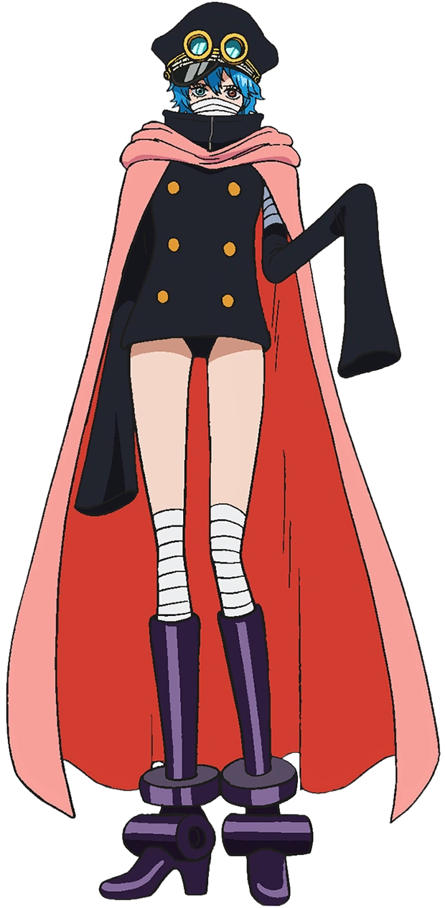

```html
<!DOCTYPE html>
<html lang="en">
<head>
  <meta charset="UTF-8">
  <meta name="viewport" content="width=device-width, initial-scale=1.0">
  <title>Gunko Dancing</title>
  <style>
    * { box-sizing: border-box; }

    body {
      min-height: 100vh;
      margin: 0;
      display: grid;
      place-items: center;
      overflow: hidden;
      background: #f8f9ff;
    }

    .dancer {
      width: min(75vw, 360px);
      height: auto;
      transform-origin: 50% 90%;
      animation: dance 700ms ease-in-out infinite alternate;
      filter: drop-shadow(0 18px 10px rgba(40, 42, 74, 0.18));
      user-select: none;
    }

    @keyframes dance {
      from {
        transform: translateY(8px) translateX(-8px) rotate(-4deg);
      }
      to {
        transform: translateY(-8px) translateX(8px) rotate(4deg);
      }
    }

    @media (prefers-reduced-motion: reduce) {
      .dancer { animation: none; }
    }
  </style>
</head>
<body>
  <main>
    
  </main>
</body>
</html>
```
